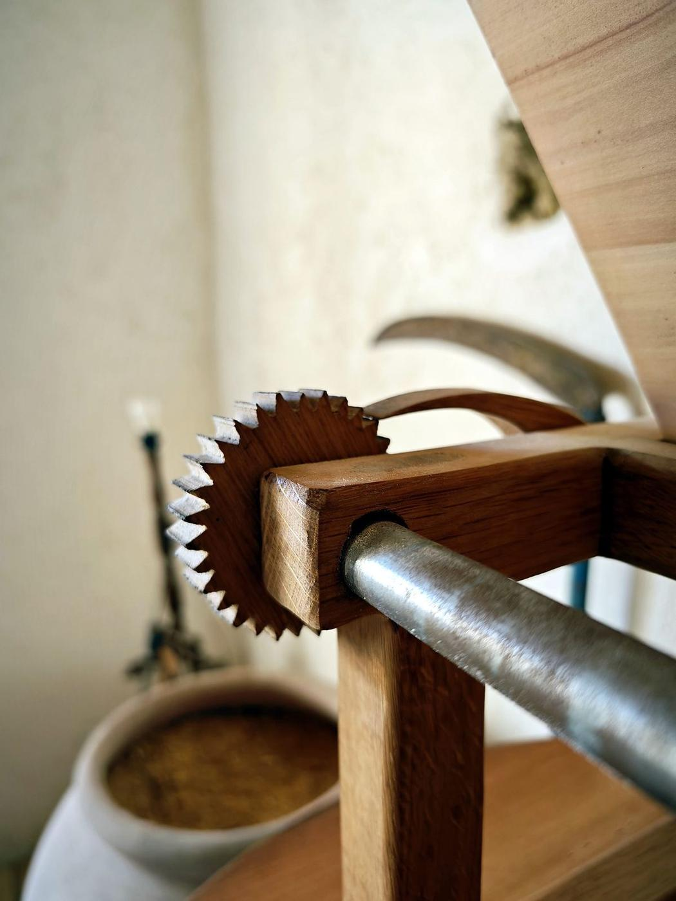
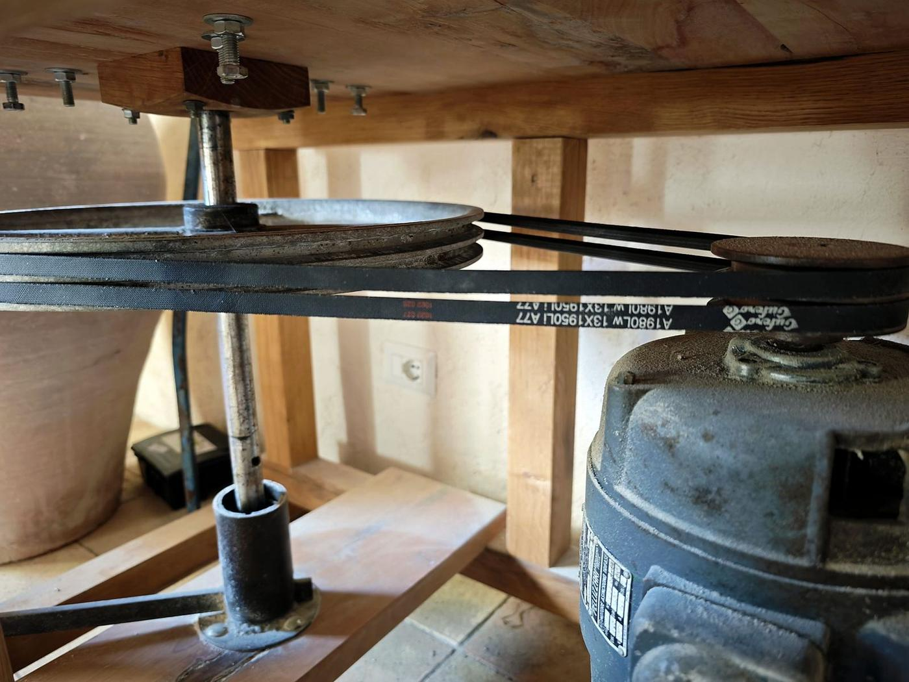
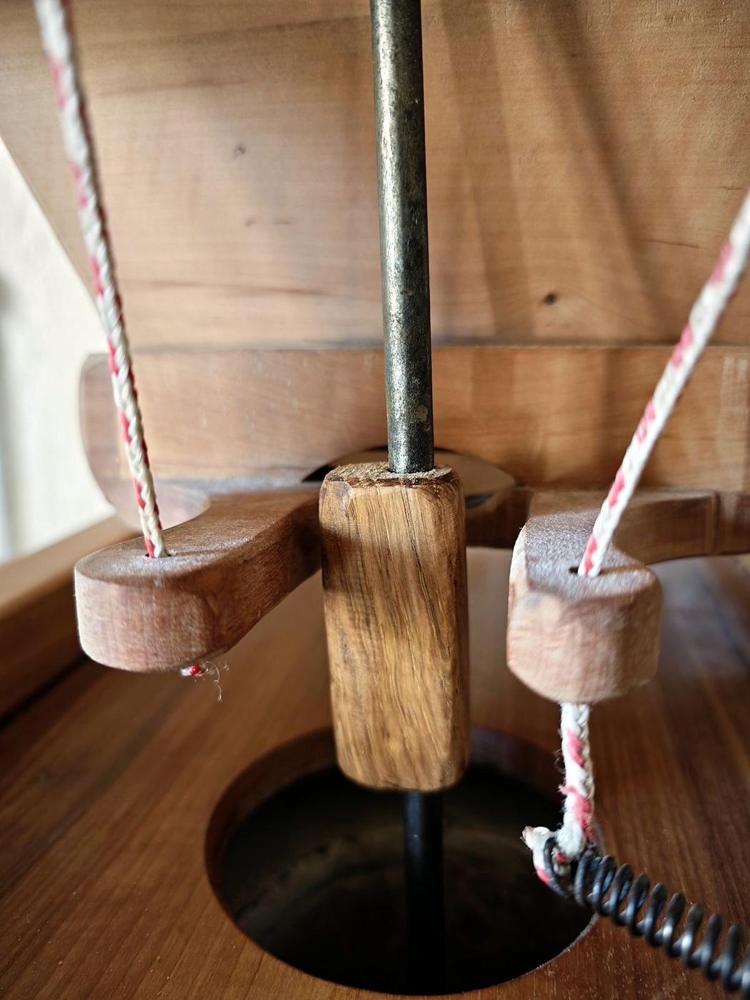
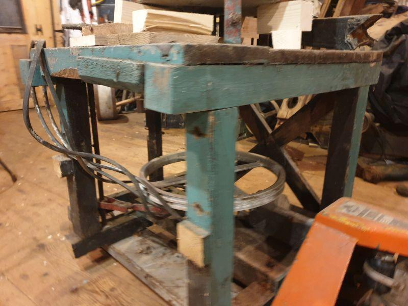
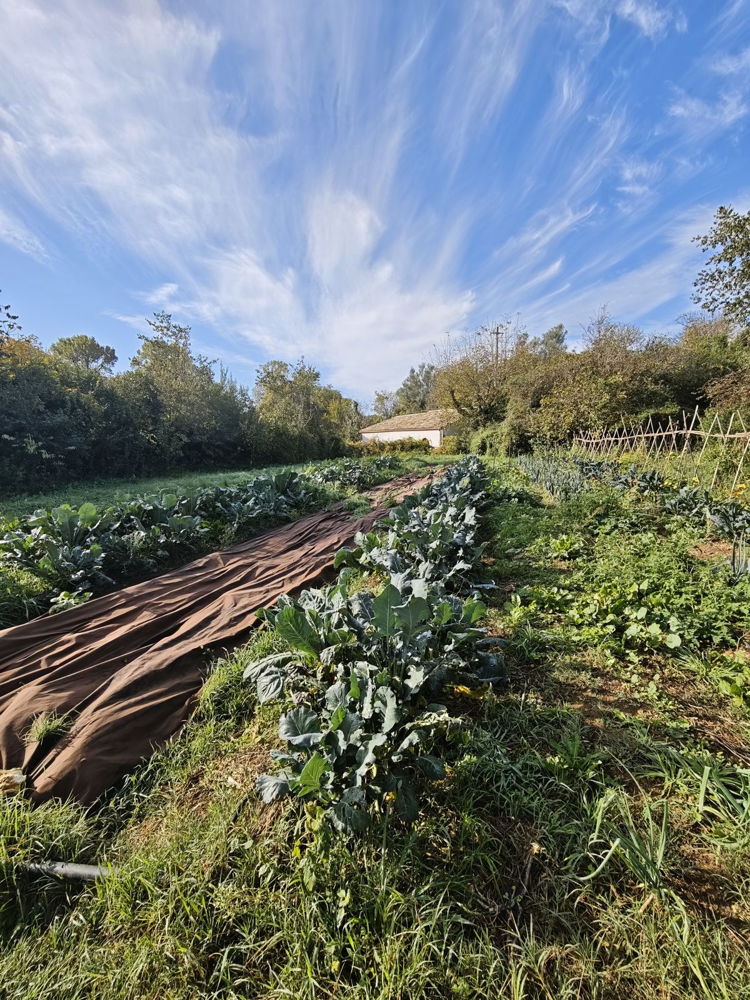

THE MILL
The sun mill.
An electric mill from 1956, bought broken, with rotting wood. It was restored plank by plank in oak and chestnut, and its granite stones and mechanisms are the original ones.
THE FOUNDATIONS
The water
A system of channels, probably cut by Greeks or Romans, still lies beneath the mill.
THE 1700s
The building
The water mill was built on top of that ancient system. It no longer turns.
1956
The machine
The granite stones and every mechanism are original, from 1956.
TODAY
The restoration
Rotten wood replaced with oak and chestnut planks. Powered by the sun instead of water.
OAK
New planks, where the old wood had rotted.
CHESTNUT
New planks, worked beside the oak.
GRANITE
The millstones, original, from 1956.
SUN
Solar power turns the stones today.




IN THE WORKSHOP
Taken apart, piece by piece.
The machine arrived painted teal and rusted. The granite stones were lifted out and cleaned, and a new frame was cut in oak.



IN ITS ROOM, TODAY


THE ARRIVAL
Through the fields, to the door.
The path crosses the vegetable garden of the farm and ends at the restored mill.
